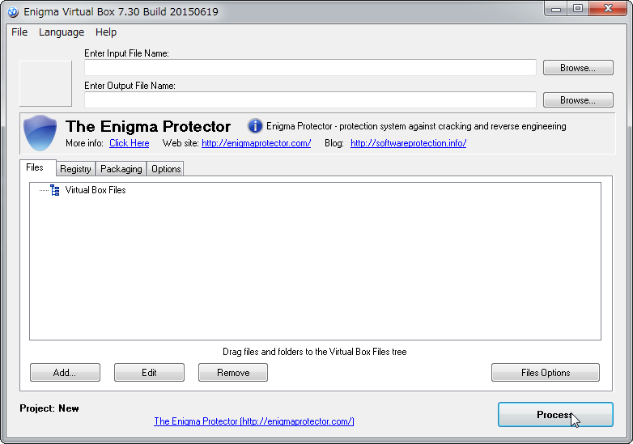
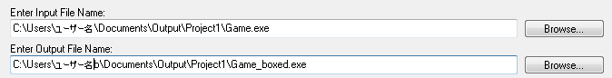
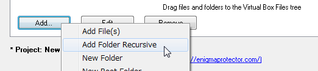
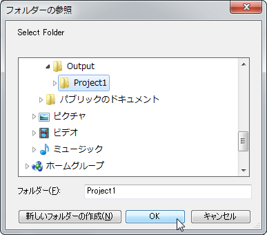
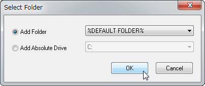
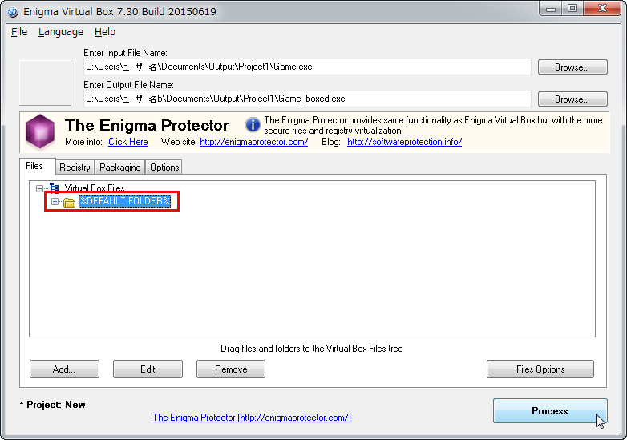

Enigma Virtual Boxの使い方
デプロイメントでWindowsを選択してゲームフォルダを出力した場合、Game.exeファイルだけではゲームをすることができません。ゲームフォルダ全体を配布する必要があります。
Enigma Virtual Boxを使ってゲームフォルダをパッケージングすることでexeファイルだけを配布することが可能になります。
ダウンロードとインストール
-
下記ページの右端の［Enigma Virtual Box］よりダウンロードしてください。
http://enigmaprotector.com/en/downloads.html - ダウンロードしたファイル［enigmavb.exe］をダブルクリックし、ダイアログに従ってソフトをインストールしてください。
使い方
-
Enigma Virtual Boxを起動します。

-
｢Enter Input File Name:｣の［Browse...］ボタンをクリックしWindowsで出力したゲームフォルダのexeファイルを選択します。
［Enter Output File Name:］は自動で設定されます。（場所やファイル名は任意で変更してください。）

-
［Add］ボタンをクリックし、［Add Folder Recursive］をクリックしてください。

-
デプロイしたゲームフォルダを選択し［OK］ボタンをクリックするとダイアログが表示されます。そのまま［OK］ボタンをクリックしてください。

↓
 -
フォルダが表示されていることを確認して（赤枠の部分）、［Process］ボタンをクリックして実行します。

- exeファイルが［Enter Output File Name:］で設定した場所に書き出されます。
Copyright © 2004-2015, The Enigma Protector Developers Team. All rights reserved.